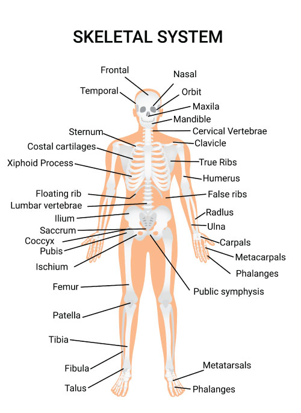
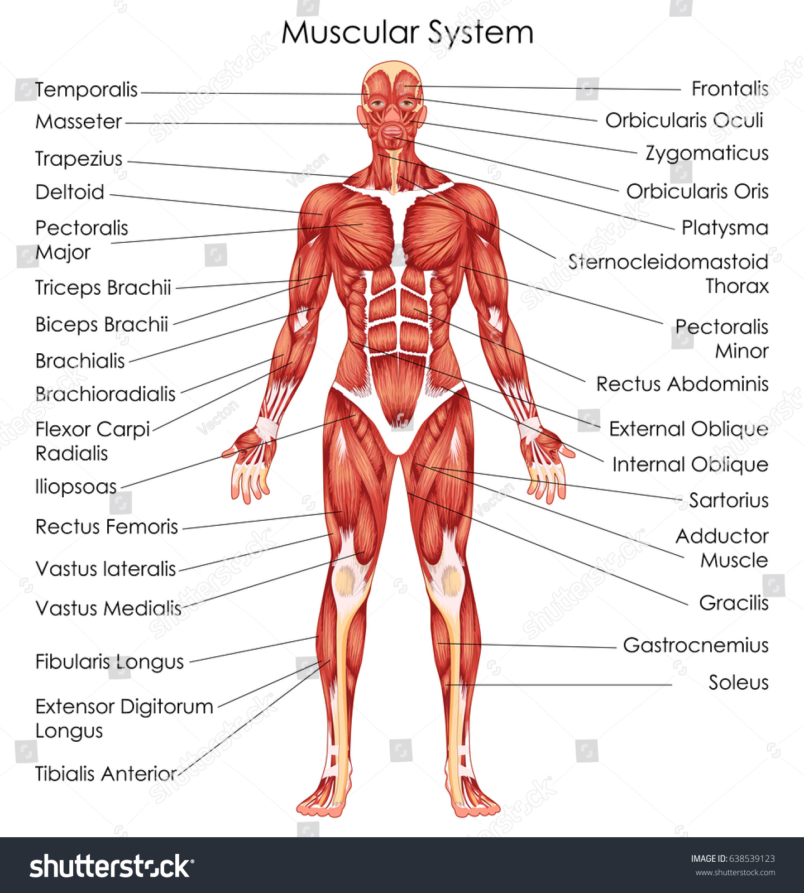
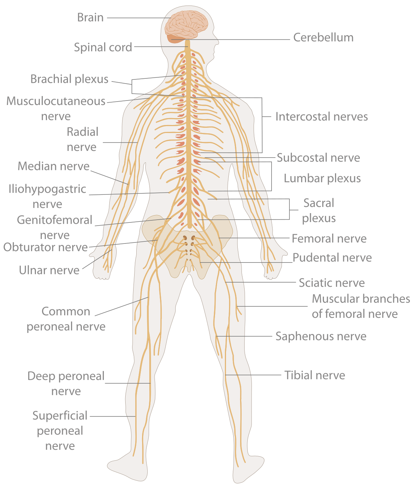
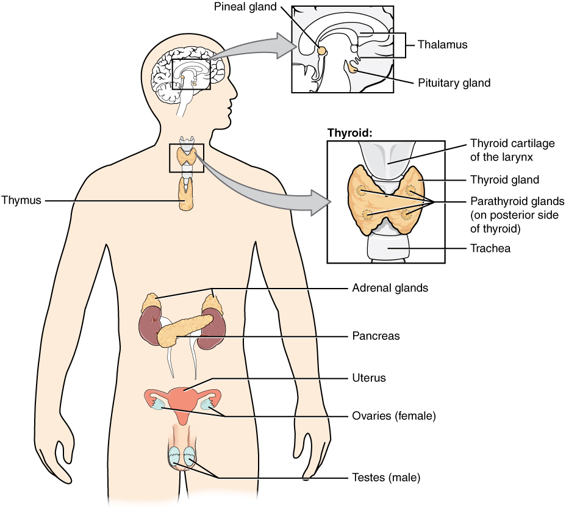
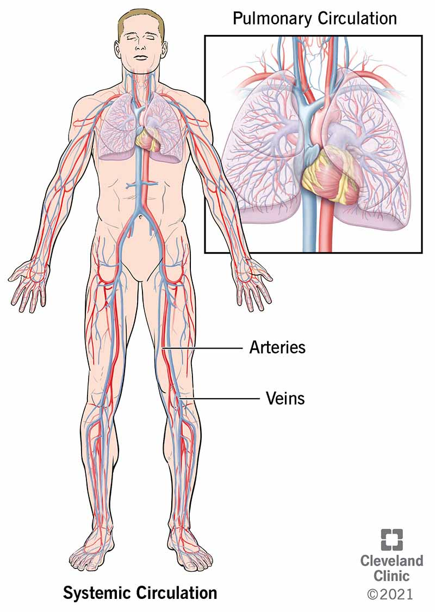
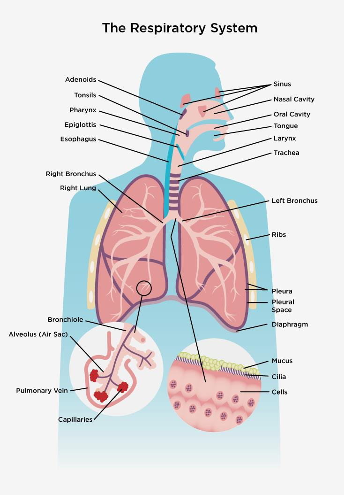
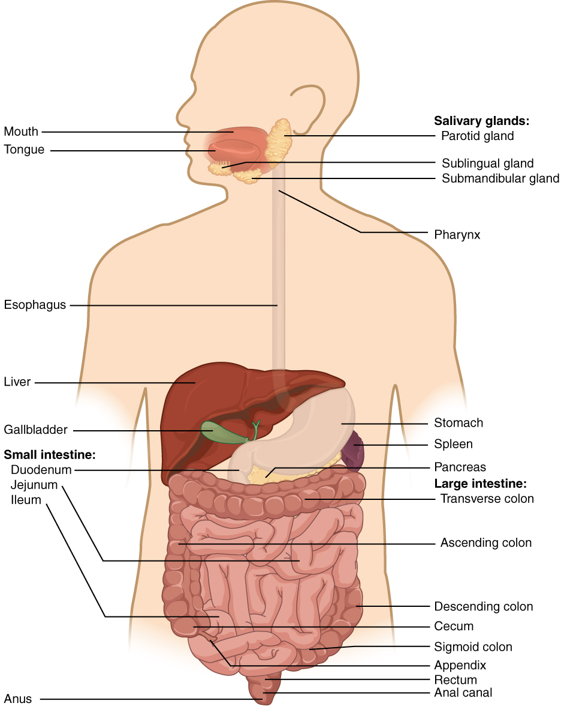
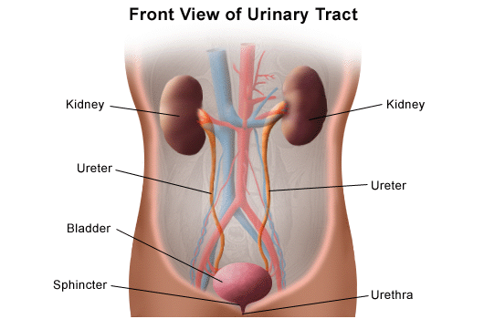
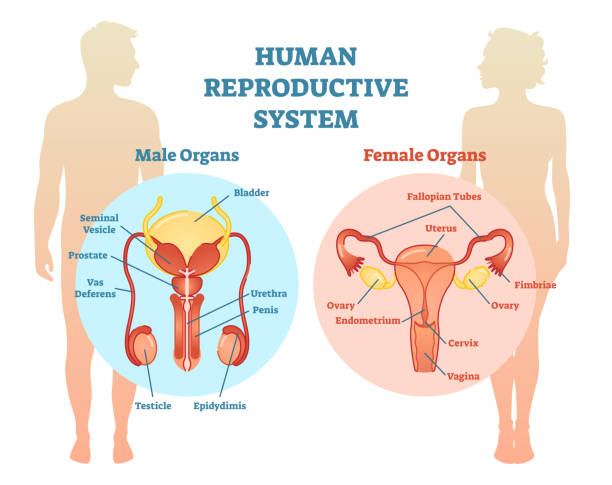

Integumentary System
Major functions: protection, sensation, temperature regulation, and vitamin D synthesis

Major Organs:
- Skin
- Hair
- Nails
- Sebaceous glands
- Sweat glands
Skeletal System
Major functions: support, protection, movement, storage, and blood cell production
Major Organs:
- Bones
- Joints
- Cartilage
- Ligaments
- Tendons
Muscular System
Major functions: movement, posture, and heat production
Major Organs:
- Skeletal muscles
- Smooth muscles
- Cardiac muscles
Nervous System
Major functions: sensory input, integration, and motor output
Major Organs:
- Brain
- Spinal cord
- Nerves
Endocrine System
Major functions: hormone production and regulation
Major Organs:
- Hypothalamus
- Pituitary gland
- Thyroid gland
- Adrenal glands
- Pancreas
Circulatory System
Major functions: transport of oxygen, nutrients, and waste products
Major Organs:
- Heart
- Blood vessels
- Blood
Lymphatic System
Major functions: fluid balance, fat absorption, and immune response

Major Organs:
- Lymphatic vessels
- Lymph nodes
- Spleen
- Thymus
- Tonsils
Respiratory System
Major functions: gas exchange, regulation of blood pH, and vocalization
Major Organs:
- Nasal cavity
- Pharynx
- Larynx
- Trachea
- Bronchi
- Lungs
- Diaphragm
Digestive System
Major functions: digestion, absorption, and elimination of waste
Major Organs:
- Mouth
- Esophagus
- Stomach
- Small intestine
- Large intestine
- Liver
- Gallbladder
- Pancreas
- Rectum
- Anus
Urinary System
Major functions: elimination of waste, regulation of blood volume and pressure, and maintenance of electrolyte and pH balance
Major Organs:
- Kidneys
- Ureters
- Bladder
- Urethra
Reproductive System
Major functions: reproduction and development of offspring
Major Organs:
- Testes (male)
- Epididymis (male)
- Vas deferens (male)
- Prostate gland (male)
- Seminal vesicles (male)
- Penis (male)
- Ovaries (female)
- Fallopian tubes (female)
- Uterus (female)
- Cervix (female)
- Vagina (female)